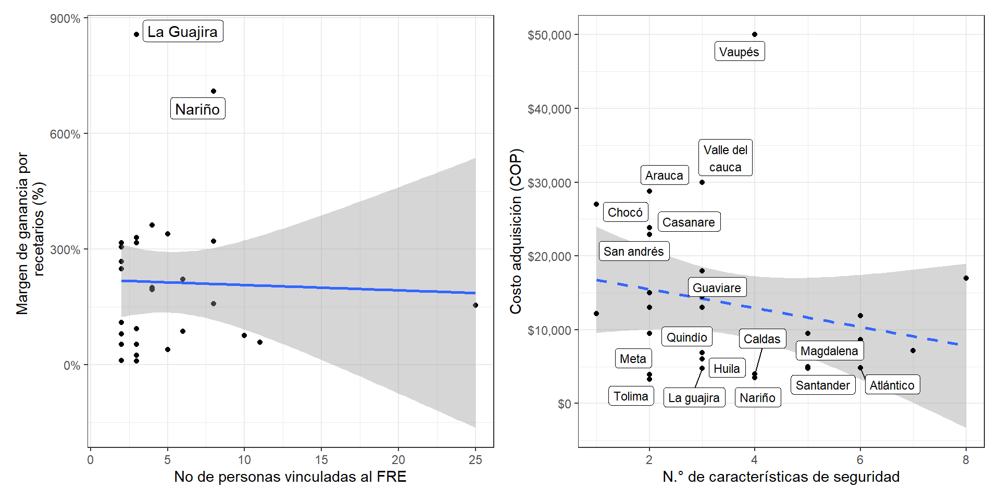

5.5 Características de los recetarios
5.5.1 Número de prescripciones por recetario
Respecto a las características de los recetarios oficiales que se manejan actualmente en el país, se evidencia la tendencia en los FRE del país es de 50 prescripciones por recetario en 22 FRE, tal cual se observó en las jornadas de acompañamiento técnico realizadas. Seguido de 4 FRE en donde se elaboran los recetarios con 25 prescripciones. También se evidenciaron 3 FRE en donde los recetarios se elaboran con 30, 80 y 100 prescripciones, como lo muestra la Figura 5.17. Cabe aclarar que según las normas de regulación de MME y recetarios oficiales, como los son las Resolución 1478 de 20061 y Resolución 1479 de 20062, no se tiene establecido un número de prescripciones por recetario, por lo que los FRE de cada departamento tienen disponibilidad de decidir dicha cuestión.
Figura 5.17: N.° de prescripciones por recetario.

5.5.2 Medidas de seguridad
Uno de los puntos de acompañamiento del proyecto Misión PRI 1901 era conocer tanto en las visitas presenciales como virtuales, los tipos de medidas de seguridad que se implementan en los recetarios. La Figura 5.18 contempló lo mencionado anteriormente, en la cual se observa que existe una gran variedad de medidas consideradas de seguridad en los recetarios, y que existen y existirán tantas como proponentes se tengan. Así mismo, se catalogaron las medidas de seguridad en baja y alta complejidad, teniendo como base lo difícil que pueden llegar a ser falsificados. Se reconoce que todos los departamentos implementaron la codificación en los recetarios oficiales tal y como se menciona en la Resolución 1478 de 20081 en el Artículo 89 y dicha codificación desarrollada para cada talonario está pensada para ser una identificación única de los mismos. Tanto como la codificación como las marcas de agua, sellos y escudos se catalogaron como medidas de seguridad de baja complejidad, teniendo en cuenta que hay un riesgo latente de falsificación debido a que las marcas de agua corresponden a figuras particulares o al escudo de la gobernación y/o secretaria de salud, al igual que los sellos y escudos. Sumado a lo anterior, los recetarios están elaborados en papel común y corriente, lo que podría aumentar la probabilidad de ser falsificados.
Figura 5.18: Medidas de seguridad en los recetarios.

Considerando lo anterior, los FRE han optado por implementar niveles de seguridad mayores y elevar la confianza en el manejo de los recetarios, entre estas medidas se observan las siguientes:
Tintas invisibles o fluorescentes que brillan al estar frente a la luz UV.
Microletras/microtextos, los cuales están inmersos en cada folio del recetario donde se describe para quien va cada copia.
Relieves o laminados observados en la copia original de los recetarios.
Filamentos o bandas de seguridad tecnología similar a los billetes.
Pruebas reactivo metal, que consisten en raspar un espacio determinado del recetario con un metal o moneda desde la página original del mismo y automáticamente los folios continuos se marcarán.
Códigos QR que codifican información del año en el cual fue distribuido el talonario.
Menos del 40% de los FRE han implementado medidas de alta seguridad en sus recetarios debido a la capacidad de manufactura de los proveedores departamentales. Dicha limitante se identificó en especial en las regiones alejadas del centro del país, donde en términos de los FRE, los proveedores departamentales no tienen la capacidad o la tecnología suficiente para elaborar un talonario con características de alta seguridad. Además, adquirir contratos con proveedores externos al departamento dificulta el seguimiento o alarga los procesos de compra, por lo que supone superar las barreras geográficas y/o sociales de algunos departamentos.
Al inicio del proyecto de inversión, se estimaba que los recetarios oficiales con más características de seguridad (independiente de su nivel de complejidad) aumentarían de forma proporcional su costo de adquisición y del mismo modo su precio de venta, sin embargo, se evidenció una tendencia totalmente diferente que se puede observar en la Figura 5.19 y Figura 5.5, entre más características de seguridad implementadas en un recetario, éste tiende a ser más económico en su costo de adquisición.
Figura 5.19: Comparativo de márgen de ganancia de recetarios.
Por otro lado, se observa el margen de ganancia obtenido mediante la venta de recetarios en los fondos rotatorios, este ítem ya se analizó anteriormente con la Figura 5.4. Sin embargo, no se encuentra una relación entre este margen de ganancia con el número de personas que trabajan dentro del FRE.
Si bien las ganancias obtenidas por las ventas de recetarios son unas de las fuentes principales de ingresos en los entes territoriales, no hay claridad de cómo se manejan estos valores debido a que departamentos con los mismos márgenes de ganancia tienen condiciones distintas, tanto en personal como en infraestructura tecnológica y estructural.